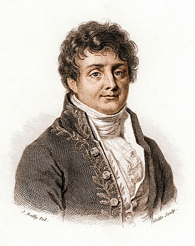
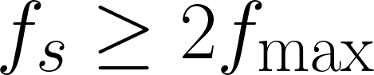
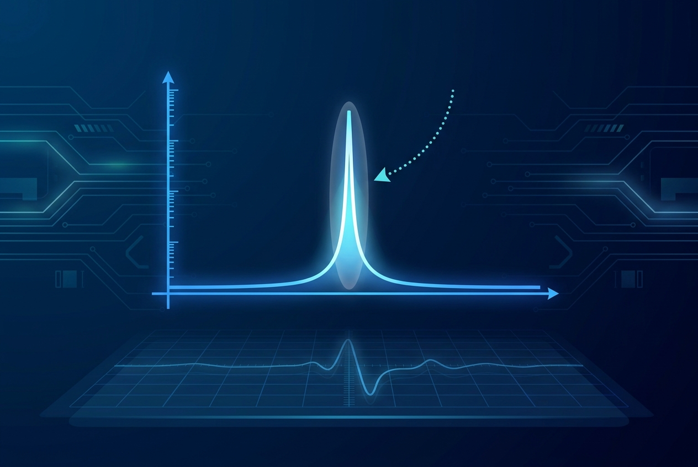

- ADC (Analog-to-Digital Converter)
- Component that samples analog voltage at periodic intervals and produces a digital number representing each sample.
- ADS-B
- Automatic Dependent Surveillance-Broadcast. Aircraft positioning system on 1090 MHz.
- AGC (Automatic Gain Control)
- Feedback loop that adjusts amplifier or attenuator gain based on input signal level.
- AOA (Angle of Arrival)
- The direction from which a signal is received, typically measured in azimuth and elevation.
- Aaronia
- German manufacturer of real-time spectrum analyzers (SPECTRAN V6 family) and direction-finding antennas (IsoLOG 3D DF).
- Aliasing
- Spectral artifact that occurs when a signal is sampled at less than twice its highest frequency component.
- Amplitude Imbalance
- Difference in gain between I and Q paths in a quadrature receiver, producing image artifacts.
- Analytic Signal
- Complex-valued signal with a one-sided spectrum, constructed from a real signal via the Hilbert transform.
- ASK (Amplitude Shift Keying)
- Digital modulation that encodes data in carrier amplitude.
- Bandwidth
- The frequency span occupied by a signal or analyzer.
- Beamforming
- Signal processing technique that creates a directional response pattern from a multi-element antenna array.
- BLE (Bluetooth Low Energy)
- Low-power short-range wireless protocol using GFSK in the 2.4 GHz ISM band.
- BPSK (Binary Phase Shift Keying)
- Digital modulation with two phase states (0 and pi).
- Carrier Aggregation
- Cellular technique combining multiple frequency bands for higher throughput.
- Channelization
- Splitting a wideband digitized signal into multiple narrowband sub-channels via parallel decimating filters.
- Chirp
- Signal with frequency that changes monotonically over time. LFM (Linear Frequency Modulation) is the most common form.
- Constellation Diagram
- Scatter plot of received I/Q symbols against ideal modulation points; reveals modulation quality.
- Counter-UAS
- Counter-Unmanned Aircraft System. Detection, tracking, and where legal, neutralization of unauthorized drones.
- dB (Decibel)
- Logarithmic unit of power ratio (10 log10) or amplitude ratio (20 log10).
- dBc
- Decibels relative to the carrier; used to specify spurious or noise levels.
- dBm
- Decibels relative to 1 milliwatt absolute power.
- DF (Direction Finding)
- Determining the angular direction from which a signal arrives.
- DFT (Discrete Fourier Transform)
- Mathematical operation transforming N time-domain samples into N frequency-domain values.
- DRFM (Digital Radio Frequency Memory)
- EW jammer that captures, modifies, and retransmits incoming victim signals.
- EVM (Error Vector Magnitude)
- RMS error between received and ideal constellation points, normalized by reference power.
- ENBW (Equivalent Noise Bandwidth)
- The noise bandwidth equivalent to a window function's frequency response.
- ENOB (Effective Number of Bits)
- Realistic ADC resolution after accounting for thermal and quantization noise.
- EW (Electronic Warfare)
- RF operations to detect, characterize, jam, or otherwise affect enemy electromagnetic systems.
- FFT (Fast Fourier Transform)
- Efficient O(N log N) algorithm for computing the DFT.
- FHSS (Frequency Hopping Spread Spectrum)
- Modulation that rapidly hops the carrier across many frequencies in a pseudorandom pattern.
- FMT (Frequency Mask Trigger)
- RTSA capability that captures I/Q whenever the spectrum exceeds a user-defined envelope.
- FSK (Frequency Shift Keying)
- Digital modulation that encodes data in carrier frequency.
- FR1
- 5G NR Frequency Range 1 (sub-6 GHz, up to 7.125 GHz).
- FR2
- 5G NR Frequency Range 2 (mmWave, 24.25 to 71 GHz).
- Friis's Formula
- Equation describing how the noise figure of a multi-stage receiver depends primarily on the first stage.
- GFSK (Gaussian FSK)
- FSK with Gaussian pulse shaping for narrower spectral occupancy.
- GNSS (Global Navigation Satellite System)
- Generic term covering GPS, Galileo, GLONASS, BeiDou, QZSS.
- GPSDO (GPS-Disciplined Oscillator)
- Reference oscillator locked to GPS for high-precision frequency and time.
- Hilbert Transform
- Mathematical operation that produces a 90-degree phase shift across all frequencies.
- IIP3 (Input Third-order Intercept Point)
- Theoretical input power at which third-order intermodulation products equal the input signals.
- I/Q (In-phase and Quadrature)
- Pair of signals representing the real and imaginary parts of a complex baseband signal.
- ISM (Industrial, Scientific, Medical)
- Unlicensed RF bands available worldwide for general use; common bands at 2.4 GHz, 5.8 GHz, 433 MHz.
- IsoLOG 3D DF
- Aaronia's direction-finding antenna family with sectored arrays and elevation capability.
- KML (Keyhole Markup Language)
- XML format for geographic data, commonly used for Google Earth.
- LFM (Linear Frequency Modulation)
- Chirp with linearly varying frequency.
- LNA (Low-Noise Amplifier)
- First active stage in a receiver, optimized for low noise figure.
- LO (Local Oscillator)
- Reference signal mixed with the input to translate frequency.
- LoRa
- Low-power wide-area protocol using chirp spread spectrum.
- MIMO (Multiple Input Multiple Output)
- Wireless technique using multiple antennas at transmitter and receiver.
- Modulation
- Encoding information onto a carrier wave by varying amplitude, frequency, or phase.
- NF (Noise Figure)
- Ratio of input SNR to output SNR of a stage; expressed in dB.
- Nyquist
- Sampling theorem; minimum sample rate is twice the highest signal frequency.
- OFDM (Orthogonal Frequency Division Multiplexing)
- Wideband modulation using many orthogonal narrowband subcarriers, each modulated with QAM.
- PDW (Pulse Descriptor Word)
- Fixed-format record describing a single pulse: TOA, PW, frequency, amplitude.
- Phase Noise
- Random fluctuations in oscillator phase, expressed as dBc/Hz at offset frequencies.
- POI (Probability of Intercept)
- Minimum signal duration captured with near certainty by an analyzer. SPECTRAN V6 PLUS achieves 10 ns POI.
- PRF (Pulse Repetition Frequency)
- Number of pulses transmitted per second by a pulsed system.
- PRI (Pulse Repetition Interval)
- Time between consecutive pulse starts; PRI = 1/PRF.
- PSD (Power Spectral Density)
- Power per unit bandwidth, commonly expressed in dBm/Hz.
- PSK (Phase Shift Keying)
- Digital modulation that encodes data in carrier phase.
- QAM (Quadrature Amplitude Modulation)
- Digital modulation combining amplitude and phase, e.g., 16-QAM, 256-QAM, 1024-QAM, 4096-QAM.
- QPSK (Quadrature Phase Shift Keying)
- Four-state PSK encoding 2 bits per symbol.
- RBW (Resolution Bandwidth)
- The width of one frequency bin in an FFT, equal to sample rate divided by FFT length.
- RTBW (Real-Time Bandwidth)
- Width of spectrum that an RTSA digitizes simultaneously with no time gaps.
- RTSA (Real-Time Spectrum Analyzer)
- Instrument that captures wide spectrum continuously without sweeping.
- Scalloping Loss
- Variation in measured amplitude as a tone moves between FFT bin centers.
- SDR (Software Defined Radio)
- Radio system where most signal processing is implemented in software.
- SFDR (Spurious-Free Dynamic Range)
- Difference between strongest signal and strongest analyzer-generated spur.
- SigMF (Signal Metadata Format)
- Open standard for I/Q file metadata; JSON sidecar paired with a raw data file.
- SPECTRAN V6 PLUS
- Aaronia's flagship USB real-time spectrum analyzer family (250XA, 500XA, 2000XA models).
- Spread Spectrum
- Modulation technique that spreads signal energy across a wider bandwidth than data alone requires.
- Spectrogram
- Time-frequency-amplitude plot, commonly displayed as a waterfall.
- TCXO (Temperature-Compensated Crystal Oscillator)
- Reference oscillator with temperature compensation, typically 1-5 ppm accuracy.
- TDOA (Time Difference of Arrival)
- Geolocation technique using arrival time differences across spatially separated sensors.
- Type Approval
- Regulatory certification confirming a wireless device meets emissions requirements before authorization.
- UAS (Unmanned Aircraft System)
- Drone or other unmanned aerial vehicle.
- VSG (Vector Signal Generator)
- Test instrument that generates arbitrary modulated waveforms.
- Waterfall
- Spectrogram display with frequency on the X-axis, time on the Y-axis, and amplitude as color.
- Window Function
- Tapering function applied to FFT input to reduce spectral leakage.
- Wrapped Spectrum
- Aaronia patented display that stacks the frequency axis across multiple lines for high-resolution wide-span monitoring.



